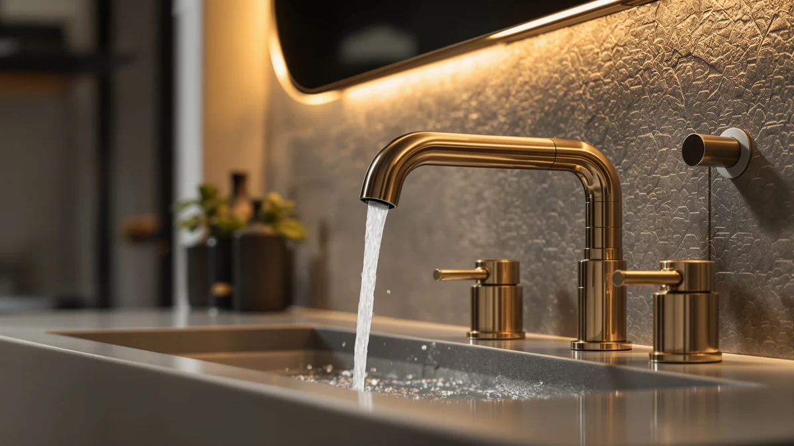

Things to Know Before You Buy
- Gold bathroom faucets come in two finish types, PVD (physical vapor deposition) and electroplated, and each one tolerates different cleaners.
- Vinegar and other acids can dull a PVD gold finish if you let them sit, so spot-treat instead of soaking.
- Most of what looks like tarnish on a gold faucet is actually hard water mineral buildup, not corrosion.
- Abrasive pads, powders, and any cleaner with bleach or ammonia will scratch or strip a gold coating within a few uses.
- Drying the faucet after every use prevents the majority of water spots before they set in.
Learning how to clean gold bathroom faucets properly protects the finish from the scratches and dulling that come from harsh scrubbing pads and the wrong cleaning products. Gold faucets look striking when they're new, but hard water spots, soap scum, and toothpaste splatter build up fast in a bathroom, and the cleaning habits that work fine on chrome or stainless steel can permanently damage a gold coating. Owners of PVD-finished faucets in particular report that a single pass with an abrasive sponge or an acidic cleaner left behind visible dull patches that never buffed out.
This guide walks through five steps: identifying your faucet's finish, rinsing away loose grime, washing with a gentle soap solution, treating hard water spots safely, and drying the fixture to a streak-free shine. Follow them in order and a gold bathroom faucet stays bright with about 20 minutes of upkeep a week, without needing a specialty polish.
What You'll Need
- Supplies: mild dish soap, distilled white vinegar, and microfiber cloths, all safe for gold bathroom faucets when used as directed below
- Tools: a soft-bristle brush and a spray bottle
Step 1: Identify your faucet's gold finish
Before you touch a single cleaner, check whether the faucet has a PVD gold coating or a traditional electroplated finish. Manufacturers list this in the product description or spec sheet, and getting it right determines which methods below are safe to use. PVD finishes are bonded at a molecular level and resist scratching better, but they're also more sensitive to acidic cleaners left on for too long.
If you can't find the finish type listed anywhere, treat the faucet as if it were PVD gold and stick to the gentlest methods below. That approach protects a plated finish without issue, while the reverse assumption can permanently dull a PVD coating.
Step 2: Rinse away loose grime with warm water
Run warm water over the faucet and wipe it down with a clean microfiber cloth. This clears away loose dust, toothpaste splatter, and surface soap scum before you introduce any cleaning solution, and it keeps you from grinding grit into the finish during the next step.
Pay attention to the base of the spout and around the handle, since grime collects in those tight spots first on any gold faucet. A soft-bristle brush works better than a cloth for those corners.
Step 3: Wash with a mild soap solution
Mix a few drops of dish soap into a cup of warm water in a spray bottle. Spray the faucet, then wipe it down with a soft cloth or the soft-bristle brush for any grooves. This combination lifts grease and everyday grime on gold finishes without the abrasion that scouring pads or powdered cleansers cause.
Rinse the soap off with clean water once you're done. Leftover soap film dries cloudy and defeats the purpose of the whole clean.
Step 4: Treat hard water spots and mineral buildup
Mix equal parts distilled white vinegar and water in the spray bottle for stubborn mineral spots. Apply it to a cloth rather than spraying it directly on the faucet, and wipe the spotted areas for no more than a minute before rinsing thoroughly with water.
Skip this step entirely on a PVD gold finish if the spots are minor. A longer soak in vinegar breaks down the coating over time, and reviewers of PVD faucets consistently note that repeated acid exposure is the most common cause of premature dulling.
Step 5: Dry and buff the faucet to a streak-free shine
Dry the entire faucet with a fresh microfiber cloth, working in small circles rather than long streaks. This step matters as much as the washing itself, since water left to air-dry on gold is what causes the spots you're trying to avoid in the first place.
Finish with a dry cloth pass over the handle and spout to bring back the shine. Repeating this five-minute dry-down after each shower or bath keeps the deeper clean above needed only once a week.
Common Mistakes to Avoid
The biggest mistake in cleaning gold bathroom faucets is treating them like chrome or stainless steel. Chrome shrugs off abrasive pads and strong acids that will scratch or dull a gold coating within weeks. If a cleaning product's label mentions "removes tarnish fast" or lists bleach as an ingredient, keep it away from gold fixtures entirely.
Soaking is the second-most common error. A quick vinegar wipe for a minute is fine on most finishes, but leaving a vinegar-soaked cloth wrapped around the faucet overnight, a trick often recommended for chrome, can strip a PVD coating down to a visibly duller layer. If a spot doesn't come off after one or two gentle passes, it's worth living with rather than reaching for a stronger acid or a longer soak.
Skipping the dry step causes most of the long-term damage people blame on "cheap" gold finishes. Water left to evaporate on its own deposits minerals directly onto the coating, and those deposits compound every day until they need serious scrubbing to remove. A 30-second wipe-down after each use prevents nearly all of that buildup.
Finally, avoid mixing cleaning products on the same faucet in the same session. Combining an ammonia-based glass cleaner with a vinegar rinse, for example, produces no benefit and increases the odds of a chemical reaction that clouds the finish. Stick to one method per cleaning session and rinse thoroughly between steps.
Our Top Picks
If your current faucet's finish is too far gone to bring back, or you're shopping for a gold faucet built to hold up to regular cleaning, these three are worth a look.

Editor's Pick
WOWOW Gold Bathroom Faucet 3
A solid brass single-handle faucet with a brushed gold finish that owners say wipes clean without special polish.
$56.99
Check Price on Amazon
Best Value
Bathroom Faucet 3 Hole Brushed
A three-hole widespread option at a lower price point, with a brushed texture that hides minor water spots between cleanings.
$45.58
Check Price on Amazon
Premium Choice
BWE Brushed Gold Bathroom Faucet
A compact single-hole faucet for smaller vanities, with a brushed gold coating built for daily soap-and-water cleaning.
$41.99
Check Price on AmazonFrequently Asked Questions
Can you use vinegar on gold bathroom faucets?
Diluted white vinegar works on most plated gold finishes for spot-treating hard water deposits, but you should never soak a PVD gold faucet in vinegar or leave it sitting for more than a minute, since the acid can dull the coating over time.
What should you never use to clean a gold faucet?
Skip abrasive powders, steel wool, melamine sponges, and any cleaner with bleach or ammonia, since all of them scratch or strip gold finishes, and avoid vinegar soaks on PVD coatings specifically.
How often should you clean a gold bathroom faucet?
A quick wipe-down after each use prevents most water spots, while a full clean with mild soap once a week keeps mineral buildup from settling into the finish.
How do you tell a PVD gold finish from a plated one?
Check the product listing or spec sheet for the words PVD or physical vapor deposition; if neither appears, the faucet is most likely electroplated, and treating it with the gentler PVD-safe methods in this guide won't cause any harm.
Why does my gold faucet look cloudy even after cleaning?
Cloudiness usually comes from leftover soap film or hard water minerals that dried on the surface rather than getting rinsed and dried off, so go back over the faucet with plain water and a dry microfiber cloth before assuming the finish is damaged.
Verdict
Knowing how to clean gold bathroom faucets comes down to matching your method to the finish. Identify whether you have a PVD or plated coating, rinse and wash with mild soap for daily grime, spot-treat hard water buildup with diluted vinegar instead of soaking, and dry the faucet fully after every use. Do those five steps consistently and a gold finish stays bright for years without ever needing a specialty polish.
If your current faucet has already lost its shine beyond what cleaning can fix, a model like the WOWOW Gold Bathroom Faucet 3 gives you a fresh brushed gold finish built to hold up to this same routine from day one.